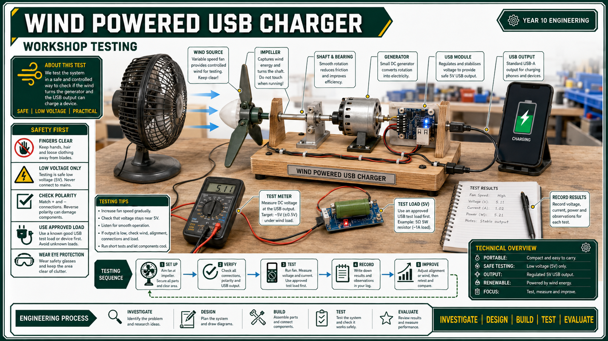

Wind Powered USB Phone Charger Project Instructions
Project brief
Design, build and test a portable wind-powered USB phone charger that converts moving air into useful electrical output.
Energy input: Use wind movement to turn an impellor or wind catcher.
Energy transfer: Drive the generator shaft directly or through gears/cogs.
Electrical output: Connect the generator and USB charging unit safely.
Size limit: Fit the final project inside a 250 x 150 x 100 mm box.
Evidence: Record research, sketches, final drawing, build photos, tests and evaluation.
What good looks like: a compact build, stable frame, efficient blade design, tidy shaft/generator alignment, repeated testing data and honest improvement notes.
System requirements
Show how air movement becomes rotation, then electrical output.
Use the generator body and shaft dimensions in the design.
Plan how the impellor is supported, attached and tested.
Keep moving parts guarded or positioned to reduce risk.
Use data to judge output, stability, efficiency and possible improvements.
Teacher note: The Drive evidence points to alternate energy, generator design, impellor shape, gears/cogs, technical drawing and evaluation as the core teaching path.

Testing the idea at bench scale: blade shape, shaft alignment, USB output and real improvement notes.
Wind powered USB charger project: impellor, shaft, generator, USB module and phone output.
Step-by-step build process
1
Confirm the brief and limits
Read the folio parameters before designing anything: size, generator, shaft, bearings and evidence.
More tips
Final model must fit inside a 250 x 150 x 100 mm box.
Generator body: 31 mm long, 24 mm diameter; shaft: 2 mm diameter, 13 mm long.
Available bearings are 20 mm outside diameter and 10 mm inside diameter.
Highlight the folio sections you must prove: sketches, final design, photos, testing and evaluation.
Quick check: Can your idea physically fit the parts and the size limit?
2
Research how the system works
Explain how moving air turns an impellor, rotates a shaft, spins a generator and feeds the USB unit.
More tips
Use correct terms: wind energy, rotation, generator, voltage, current, USB output and efficiency.
Use the alternate energy and costing worksheets as supporting research.
Keep notes on why blade shape, wind speed, friction and alignment change the output.
Quick check: Can you explain wind to rotation to electrical output without waffle?
3
Sketch and compare concepts
Develop several layouts for the impellor, frame, shaft support, generator position and USB module.
More tips
Include at least three concept sketches, then note strengths and weaknesses for each one.
Compare direct drive with gears or cogs if they help increase generator speed.
Label blade angle, shaft location, bearings, frame, generator, USB unit and phone lead path.
Choose the final design using function, safety, compactness and build quality, not just looks.
Quick check: Did you justify the final concept, not just pick the prettiest one?
4
Create the final drawing or CAD model
Turn the chosen idea into an Onshape model or labelled drawing with enough detail to build from.
More tips
Include key dimensions, component positions and the overall bounding size.
Show how the impellor attaches to the 2 mm shaft and how the generator is supported.
Show where the USB module sits and how wires/leads are protected from moving parts.
Optional laser cutting or 3D printing should clearly improve accuracy, not just look fancy.
Quick check: Could this drawing guide the build without guessing?
5
Build the mechanical system first
Construct the frame, fit the impellor, align the shaft and check the rotation before connecting electronics.
More tips
Check shaft alignment by spinning the impellor by hand; it should rotate freely without wobble.
Secure bearings, brackets and the generator body before running wind tests.
Keep fingers, loose clothing, hair and leads clear of moving blades.
Photograph the frame, shaft support and impellor before the wiring hides the details.
Quick check: Does the impellor spin smoothly before any electrical testing?
6
Connect, test, improve and evaluate
Connect the generator and USB unit, record output data, change one variable at a time, then finish the folio.
More tips
Teacher-check the wiring before attaching a phone or USB device. No heroics. Electricity is fussy.
Record wind source, blade setup, gear/direct-drive setup, voltage/output result and faults.
Test one change at a time: blade angle, number of blades, gear ratio, wind speed or frame stiffness.
Evaluate output, stability, portability, safety, construction quality and sustainability.
Use photos, test data and problem notes to prove what worked and what you would change.
Quick check: Does your evaluation use actual test evidence, not vibes?
Quick checks
Can you explain the energy chain: wind, impellor, shaft, generator, USB output?
Does the model fit inside the 250 x 150 x 100 mm limit?
Are the generator, shaft, bearings and impellor aligned and secure?
Has the electrical connection been teacher-checked before any phone/device test?
Have you captured research, concept sketches, final drawing/CAD, build photos, test data and evaluation?
Semester 2 Assessment Task: Alternate Energy Project
Students complete the wind generator/USB charger design project as part of the alternate energy assessment. The Drive task also references a solar powered car component.
Date of IssueTeacher to confirm
Build & TestingWeeks 13-18, Semester 2
Folio SubmissionWeek 20, Semester 2
Weighting40%
Task Overview
Investigate alternate energy, design a compact wind-powered USB phone charger, build and test the model, and document the process in a project folio.
Research renewable energy and wind generation
Develop and justify impellor, frame and power-transfer design ideas
Create final drawings or Onshape evidence
Build and test the project safely
Evaluate output, portability, construction quality and sustainability
Throughout Semester 2, students develop alternative-energy understanding through a practical wind generator project. The unit moves from energy context, to design constraints, to concept development, to construction, testing and evaluation.
This timeline is a working sequence built from the Drive evidence, not an official scope and sequence. Adjust dates and assessment timing to match the school calendar.
Week 1: Unit introduction, alternative energy overview, renewable/non-renewable comparison and project context.
Week 2: Wind turbine operation, energy transfer chain, storage/charging limits and worksheet evidence.
Week 3: Renewable energy advantages, limitations, intermittency, storage and charging infrastructure.
Week 4: Energy costing, sustainability, lifecycle impact and folio research evidence.
Week 5: Project brief, generator/USB unit analysis, dimensions, size limit and safety risks.
Week 6: Impellor research, blade materials, blade angle, number of blades and wind-catcher options.
Week 7: Mechanical transfer options: direct drive, gears/cogs, shaft support, bearings and friction.
Week 8: Design constraints, test variables and teacher check before concept selection.
Week 9: Concept sketches for frame, impellor, shaft support, generator location and USB module placement.
Week 10: Compare concepts using function, safety, compactness, efficiency and build quality.
Week 11: Final design selection, justification, materials list and build sequence planning.
Week 12: Final drawing or Onshape model with dimensions, labels and assembly thinking.
Week 13: Begin construction: frame, shaft support, impellor attachment and generator location.
Week 18: Retest improvements, compare results and complete final output testing.
Week 19: Sustainability reflection, portability review, construction quality review and evaluation drafting.
Week 20: Final testing photos, folio completion, evaluation and submission checkpoint.
Outcomes Alignment (IND5)
This unit aligns with the existing Industrial Technology Engineering outcomes through WHS, design, production, communication, testing and evaluation.
IND5-1: Identify and manage WHS risks when using tools, rotating parts and low-voltage testing.
IND5-2: Apply design principles to develop and modify a functional wind-powered USB charger.
IND5-3: Select and use tools, equipment and processes to produce a working model or prototype.
IND5-4: Select and justify materials and components including blades, frame, shaft support, gears/cogs and housing.
IND5-5: Communicate ideas through sketches, technical drawings, folio notes and testing data.
IND5-6, IND5-7: Work collaboratively, follow a planned build sequence and transfer skills across mechanisms, electricity and technical graphics.
IND5-8, IND5-9, IND5-10: Evaluate function, efficiency, sustainability, cost, construction quality and broader use of renewable energy systems.
Post-2027 Outcomes Alignment (EGT5)
This project also fits the post-2027 Engineering Technology structure by asking students to design, construct, test, troubleshoot and evaluate a working alternative-energy system.
EGT5-SAF-01: Apply risk management and safe work practices during practical construction and testing.
EGT5-ENV-01: Analyse renewable energy, recyclability, material choice, waste and environmental impacts.
EGT5-COM-01: Communicate the engineering solution through folio writing, drawings, tables and evaluation.
EGT5-GRP-01: Develop technical graphics including sketches, final drawings, Onshape modelling and labelled diagrams.
EGT5-EVL-01: Investigate and evaluate prototype performance through structured tests and troubleshooting records.
EGT5-MEA-01: Analyse practical system behaviour such as shaft rotation, gearing, impellor design and power transfer.
EGT5-USE-01: Select and apply materials and components suitable for blades, frame, supports and housing.
EGT5-IVT-01: Connect classroom prototypes to renewable energy technologies, charging infrastructure and societal impacts.